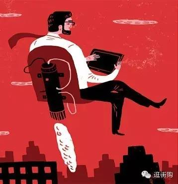

自总理在今年两会期间提及“互联网+”和“线上线下互动消费”（O2O）以来，业界关于“互联网+”以及“互联网+”与O2O的关系的讨论空前增多。此前有专家撰文提出“互联网+就是O2O”的观点，获得了业内不少人的赞同。很显然，“互联网+”和O2O在本质上十分接近，都是强调互联网（Online）与实体经济（Offline）融合互动并促进后者的转型升级；但“互联网+”被赋予了更广的意义。
各方理解的“互联网+”
官方版：“互联网+”代表一种新的经济形态，即充分发挥互联网在生产要素配置中的优化和集成作用，将互联网的创新成果深度融合于经济社会各领域之中，提升实体经济的创新力和生产力，形成更广泛的以互联网为基础设施和实施工具的经济发展新形态。
马化腾版：“互联网+”是以互联网平台为基础，利用信息通信技术与各行业的跨界融合，推动产业转型升级，并不断创造出新产品、新业务与新模式，构建连接一切的新生态。
阿里版：所谓“互联网+”就是指，以互联网为主的一整套信息技术（包括移动互联网、云计算、大数据技术等）在经济、社会生活各部门的扩散应用过程。
李彦宏版：“互联网+”计划，我的理解是互联网和其他传统产业的一种结合的模式。这几年随着中国互联网网民人数的增加，现在渗透率已经接近50%。尤其是移动互联网的兴起，使得互联网在其他产业当中能够产生越来越大的影响力。我们很高兴地看到，过去一两年互联网和很多产业一旦结合的话，就变成了一个化腐朽为神奇的东西。尤其是O2O（线上到线下）领域，比如线上和线下结合。
雷军版：李克强总理在报告中提“互联网+”，意思就是怎么用互联网的技术手段和互联网的思维与实体经济相结合，促进实体经济转型、增值、提效。
逛街购版：“互联网+”指互联网作为一种先进生产力，通过和线下融合互动，促进传统产业和传统消费转型升级的同时，助力国家提升综合国力的长远目标。

互联网从工具发展为水电煤。以1994年作为中国商用互联网元年起算，之前的20年都未见“互联网+”流行开来，而到了2015年这个概念才被大众化传播，这和互联网的作用由工具发展到水电煤有关。到2015年时，互联网是先进生产力的观点被各方广泛认同。互联网可以分成两个阶段，第一阶段是互联网作为一个独立的行业，有别于传统线下行业，互联网新经济和互联网行业的概念被多次提及就是证明。这个阶段，互联网用其在空间性和时间性上的优势，从早期的信息，到中间的娱乐游戏，到后来的商品零售，互联网的新方式取得了不错成绩。但这个阶段，互联网和线下各产业是平行存在的，互联网和线下实体的冲突不绝于耳。2013年后，互联网进入第二阶段，也就是“互联网+”阶段。这一阶段是伴随智能手机和3G/4G的普及而发展起来的，移动互联网的发展打破了生活和工作的区隔，打破了线上和线下的界限。这一阶段，互联网逐渐脱离工具属性成为水电煤，与其它行业结合变成了底层设施。
目前，中国已经成为全球第二大经济体，将取得与之适应的国际影响力和话语权。无论是国家层面的一路一带战略，还是企业层面的国际化扩张，需要比以前有更高效的打法。中国国家互联网信息办公室成立，世界互联网大会在中国举办，种种迹象表明，互联网的无边界属性，在助力中国实现国际战略目标上发挥的作用将越来越重要。